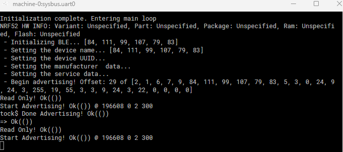
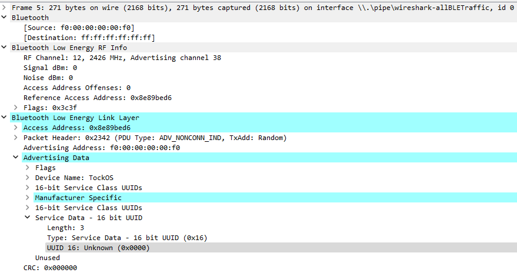

Build & Run Instructions
When working with libtock-rs we are automatically also building tock itself.
For building libtock-rs we first need rustup:
curl --proto '=https' --tlsv1.2 -sSf https://sh.rustup.rs | sh
and a few other dependencies:
apt-get install git python3 ninja-build pkg-config(ubuntu:22.04)
We then clone the libtock-rs repository recursively to also clone tock:
git clone --recursive https://github.com/tock/libtock-rs
and inside the libtock-rs repository we run the setup:
make setup
Note here that running make setup also builds a custom branch of qemu which requires some dependencies to be installed.
apt-get install libglib2.0-dev libfdt-dev libpixman-1-dev zlib1g-dev libgtk-3-dev(ubuntu:22.04)
After that, our examples need to be copied into the examples folder and can be built with:
make nrf52840 EXAMPLE=ble_advertisingmake nrf52840 EXAMPLE=ble_scanning
As tock separates the kernel and modules, we also need to build the kernel separately:
cd libtock-rs/tock/boards/nordic/nrf52840dk && make all
After this, we will have the following useful artifacts:
libtock-rs/tock/target/thumbv7em-none-eabi/release/nrf52840dk.bin-tockfor thenrf52840dklibtock-rs/target/thumbv7em-none-eabi/release/examples/ble_advertising.tab- The Advertising Modulelibtock-rs/target/thumbv7em-none-eabi/release/examples/ble_scanning.tab- The Scanning Modulelibtock-rs/target/thumbv7em-none-eabi/release/examples/ble_advertising.tbf- The ELF file of the Advertising Modulelibtock-rs/target/thumbv7em-none-eabi/release/examples/ble_scanning.tbf- The ELF file of the Scanning Module
Build with Docker
A Dockerfile is additionally provided that when run will build all these artifacts here.
By running docker build --output=output --target=binaries . The docker image will be built and the output artifacts will be extracted and put into a folder called output.
Note here that the ble_advertising.elf / ble_scanning.elf are already merged with the kernel and can be directly used with renode.
Run on Device
When wanting to run these examples on actualnrf52840dk boards we can follow the guidelines of tock and libtock-rs which means to build the kernel with make install and the examples with make flash-nrf52840 EXAMPLE=<example> instead and have the board plugged in over USB.
If we instead want to do this more manually after obtaining the artifacts as above or through docker we can instead install the kernel and examples with:
-
tockloader flash --address 0x0 --board nrf52840dk --jlink nrf52840dk.bin -
tockloader install --board nrf52840dk --jlink ble_advertisingor -
tockloader install --board nrf52840dk --jlink ble_scanning
This will install the .tab files with the respective names on a connected board with tock flashed on.
Depending on how the board is connected and the operation system used some command line options might need to be changed.
Note that as of the writing of this, tockloader does not support Windows for flashing and installing tock and modules, see here on how to use WSL2 for this instead.
Run on Renode
To run the examples with tock in renode and preserve all our debug symbols we first need to merge the tbf files with the kernel:
arm-none-eabi-objcopy --update-section .apps=ble_advertising.tbf nrf52840dk.elf ble_advertising.elfarm-none-eabi-objcopy --update-section .apps=ble_scanning.tbf nrf52840dk.elf ble_passive_scanning.elf
The merged ELF files can then be directly loaded in renode.
The examples provide two renode scenarios to play around with: tock_advertise and tock_demo.
tock_advertise
Run with:
renode -e "include @tock_advertise.resc;start"
This starts the advertising example and Wireshark to capture the Bluetooth Low Energy Traffic:
 
tock_demo
Run with:
renode -e "include @tock_demo.resc;start"
This starts both the advertising and scanning examples.
Notes on renode:
The modified nrf52840-tock.repl configuration is needed to run tock modules in renode.
The most notable change is making the following areas of memory writable:
regout0: Memory.ArrayMemory @ sysbus 0x10001304
size: 4
pselreset: Memory.ArrayMemory @ sysbus 0x10001200
size: 8
nfcpin: Memory.ArrayMemory @ sysbus 0x1000120C
size: 4
This is because the startup of tock for the nrf boards requires configuring these registers.
If these registers are not writable then renode will be stuck in a reboot loop failing constantly to configure the device.